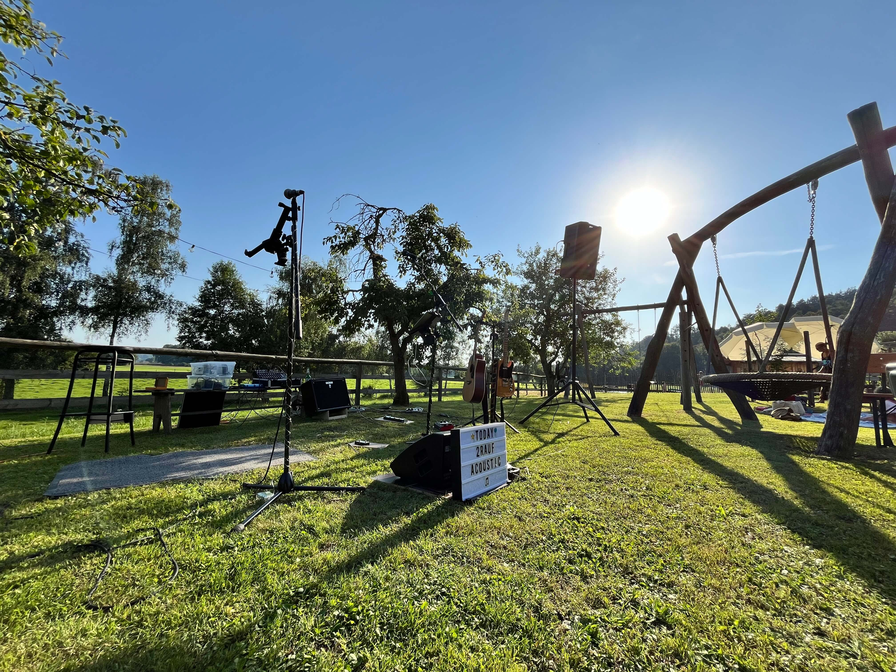
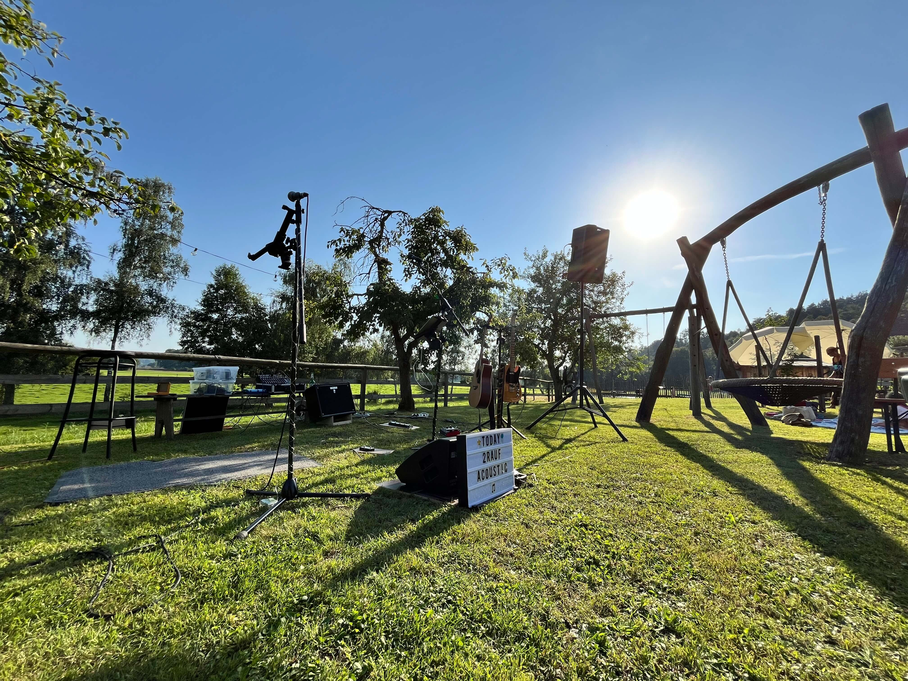
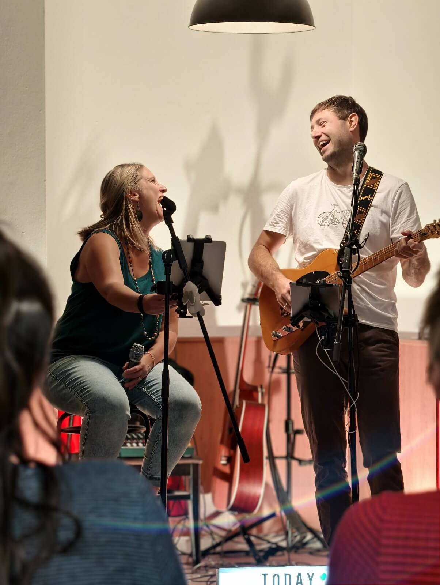
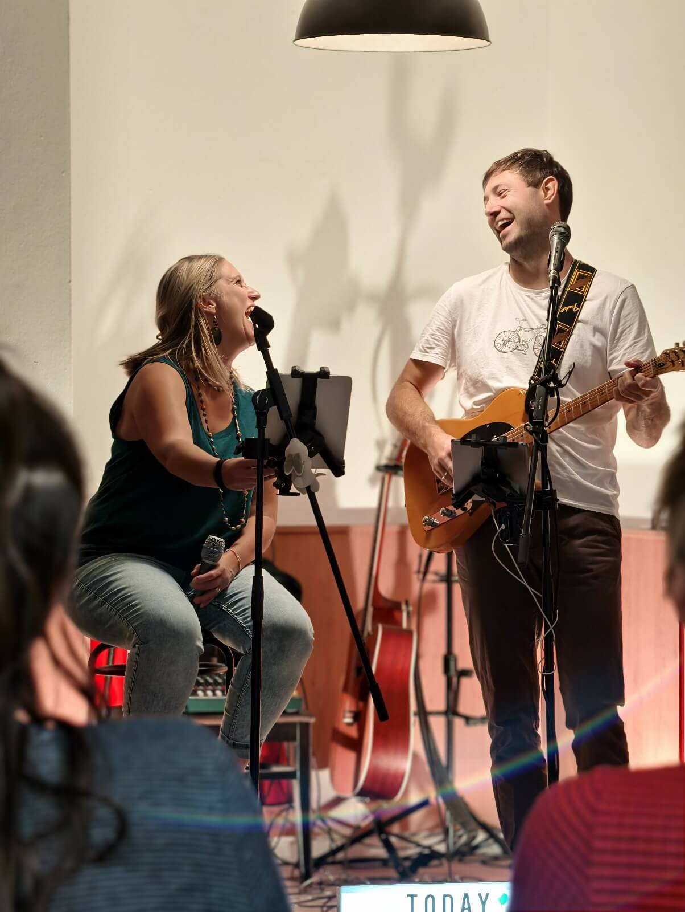
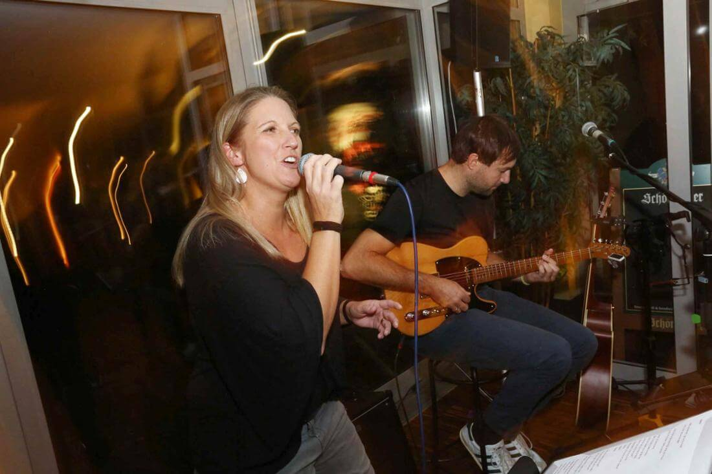
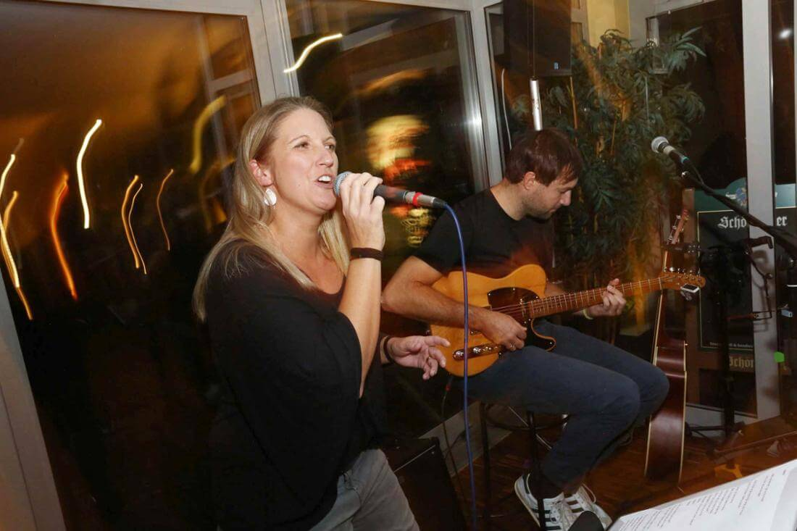

Über uns
2rauf acoustic – das sind Sabine & Michael. Zwei Freunde, die mit Gitarre, Gesang und Mundharmonika handgemachte Musik mit Herz spielen. Wir begleiten Hochzeiten, Taufen, Geburtstage, Sektempfänge, Bars und Wohnzimmerkonzerte im Raum Mühldorf, Vilsbiburg, Dorfen, Altötting und Wasserburg – überall dort, wo Musik berühren soll.
„Zwei Stimmen, eine Gitarre – und jede Menge Gefühl.“
Repertoire & Anlässe
Unser Repertoire reicht von zeitlosen Klassikern bis zu modernen Lieblingssongs – immer mit einer eigenen, akustischen Note.
Wofür wir gut sind
- ✅ Hochzeit & Trauung (Standesamt, Kirche oder freie Trauung)
- ✅ Taufen & Familienfeiern
- ✅ Geburtstage & Wohnzimmerkonzerte
- ✅ Sektempfänge & stilvolle Hintergrundmusik
- ✅ Bars, Cafés & kleine Bühnen
Songbeispiele
- Adele – Make You Feel My Love
- Zaz – Je veux
- Lady Gaga & Bradley Cooper – Shallow
- Bill Withers – Ain’t No Sunshine
- Max Prosa – Bis nach Haus
- Jeff Buckley – Hallelujah
- Chris Stapleton – Tennessee Whiskey
- John Mayer – Something Like Olivia
- Amy Winehouse – Valerie
- Hanson – Mmmbop
Fotos & Videos


 


 

 


Termine & Auftritte
Nächster Auftritt
6. Dez 2025 · Privatveranstaltung
Mühldorf
19:30 – 22:00 Uhr
Letzter Auftritt
14. Nov 2025 · Italienischer Christkindlmarkt
Blainöd (Taufkirchen/Vils)
17:00 – 21:00 Uhr
Live-Akustikmusik in gemütlichem Ambiente
🎤 Auch für euer Event buchbar!
Hochzeit · Geburtstag · Sektempfang · Firmenfeier
Jetzt anfragen